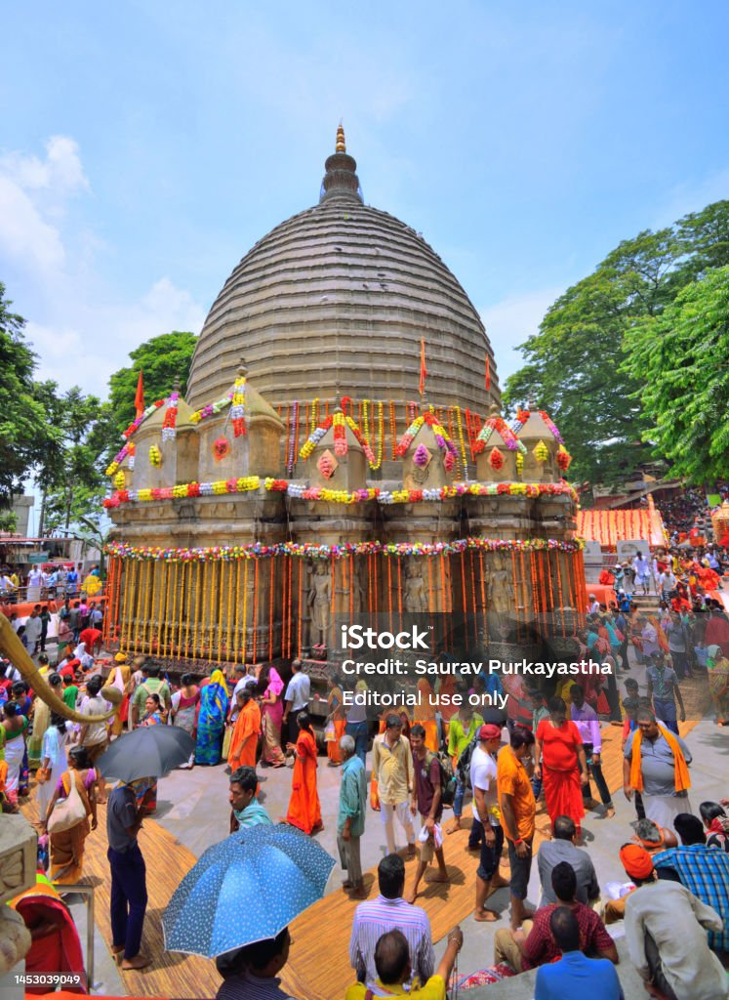
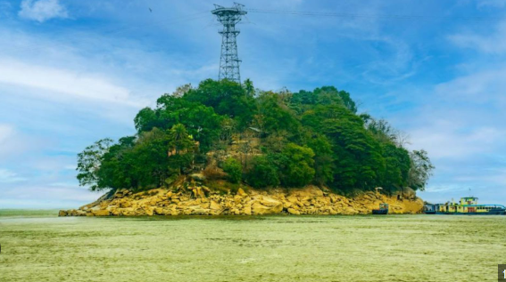
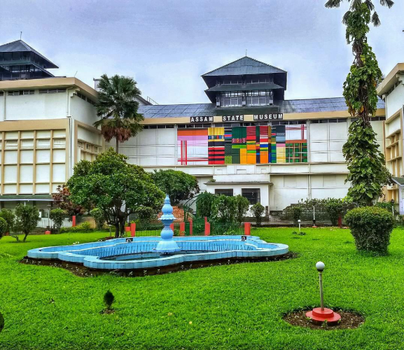
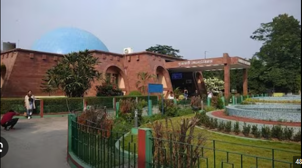
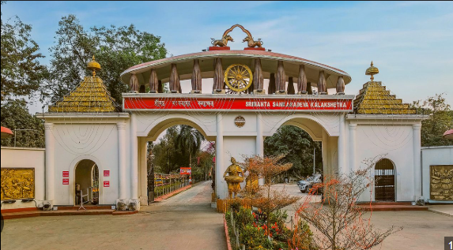
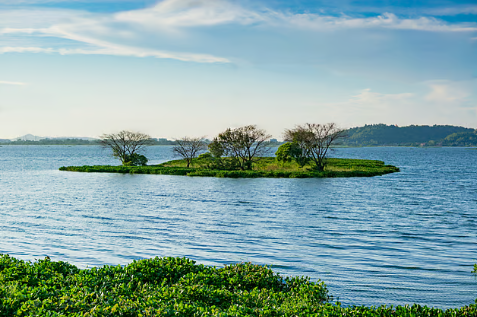

Kamakhya Temple
Perched atop Nilachal Hill, this ancient temple is one of India's most revered Shakti Peethas, dedicated to Goddess Kamakhya. It offers panoramic views of the Brahmaputra River.
Kamakhya TempleUmananda Island
Situated in the middle of the Brahmaputra River, this serene island houses the Umananda Temple, dedicated to Lord Shiva. Accessible via a short ferry ride, it's known for its tranquil ambiance and friendly langurs.
Umananda IslandAssam State Museum
Established in 1940, the museum showcases Assam's rich cultural heritage through its extensive collection of artifacts, sculptures, and manuscripts.
Assam State MuseumAssam State Zoo cum Botanical Garden
Home to nearly a thousand animals and a diverse range of plants, this zoo and botanical garden is a favorite among families and nature enthusiasts.
Assam State ZooSrimanta Sankardev Kalakshetra
A cultural complex dedicated to the life and works of Srimanta Sankardev, featuring a museum, open-air theater, and traditional Assamese architecture.
Srimanta Sankardev KalakshetraNavagraha Temple

Located on Chitranchal Hill, this temple is dedicated to the nine celestial bodies (Navagraha) and is an important center for astrology and astronomy.
Navagraha TempleFancy Bazaar

Often referred to as the 'Chandni Chowk of Guwahati,' this bustling market is perfect for shopping local goods, textiles, and enjoying street food.
Fancy BazaarDeepor Beel
A freshwater lake and bird sanctuary, it's a haven for birdwatchers and offers picturesque sunset views.
Deepor BeelBrahmaputra River Heritage Centre

Beautiful sunset views, colonial architecture, riverside location, and evening cultural programs make it a hidden gem in Guwahati.
Brahmaputra River Heritage CentreBrahmaputra River Cruise

Experience the majestic Brahmaputra River with a scenic cruise, especially enchanting during sunset. Options range from simple boat rides to luxurious dining cruises.
Brahmaputra River Cruise